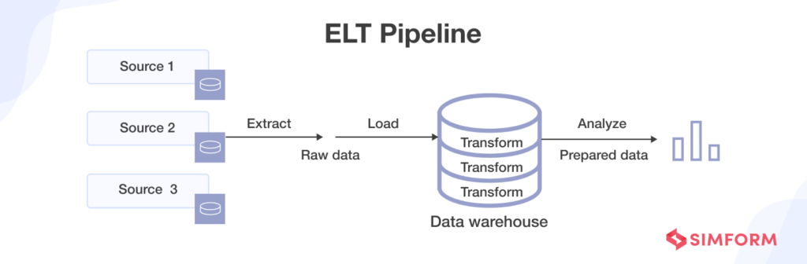
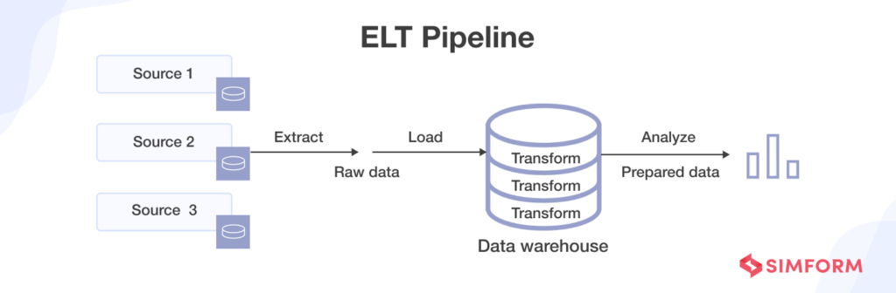

Introduction to Data Orchestration
Presenter: Eddie Cosma
CLEpy Meetup – August 12, 2025
Agenda
- What are Data Pipelines?
- What is Data Orchestration?
- Why Orchestrators Matter
- Apache Airflow Overview
- Dagster Overview
- Feature Comparison
- Demo
- Choosing the Right Tool
- Q&A
The Big Picture: Data Pipelines
- Series (graph) of data processing tasks
- E.g., Ingest → [Transform ⇆ Store] → Analyze
- Orchestration coordinates each step and manages dependencies
ETL vs. ELT
 

What is Data Orchestration?
- Coordinates execution of data tasks
- Schedules tasks (time-based, sensor-based)
- Manages dependencies
- Handles retries
- Monitors completion
- Tracks assets (metadata, staleness, etc.)
Task-based vs. Asset-based
- Task-based: focused on imperative steps of data processing
- Imagine baking cookies using functions get_ingredients, mix_ingredients, bake_cookies
- Asset-based: focused on data assets created "between" processing steps
- Imagine baking cookies by materializing assets measured_ingredients, cookie_dough, cookies
Task-based vs. Asset-based
- Task-based: prominent in Airflow 2
- Asset-based: prominent in Dagster and Airflow 3
Why Use an Orchestrator?
- Reliability
- Reproducibility
- Scalability
- Observability
- Collaboration
What is a DAG?

- DAG = Directed Acyclic Graph
- Represents tasks (nodes) and dependencies (edges) in a workflow
- Directed: edges have a direction, indicating execution order
- Acyclic: no cycles allowed — you can’t loop back to a previous task
- Ensures workflows have a clear start and end
Further reading: https://en.wikipedia.org/wiki/Directed_acyclic_graph

- Origin: Airbnb (2015), now Apache project (2019)
- DAG-based workflows (historically, task-based)
- Large community
- Well-documented
- Extensive use in industry
New in Airflow 3
- Asset-based workflows
- Improved UI
- DAG versioning
- Task execution independent of core Airflow

- Launched 2019
- Asset-centric approach
- Type checking & strong local dev experience
Demo: Airflow 2
Demo: Dagster
Final Takeaways
- Orchestration = reliability for data pipelines
- Both Airflow and Dagster are solid choices
- Airflow more prevalent in industry; recently modernized
- Dagster modern and dev-friendly
Q&A
Questions?